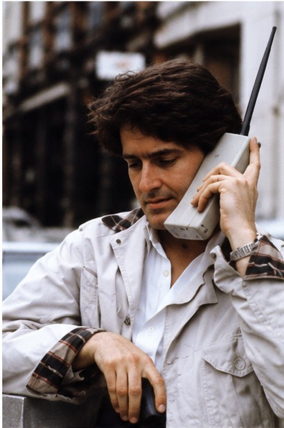
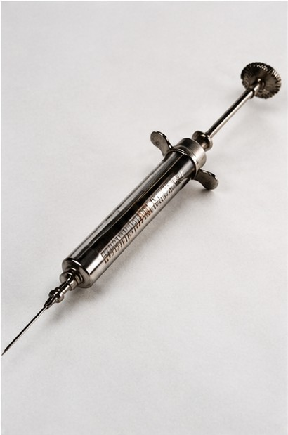
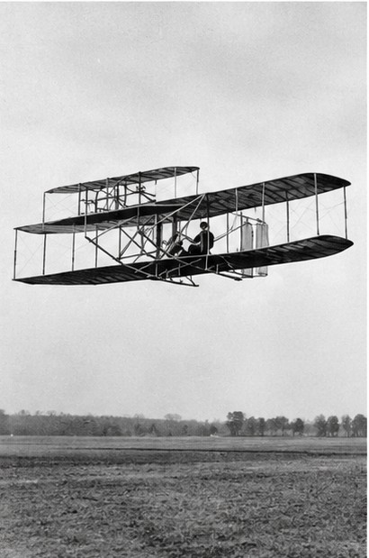
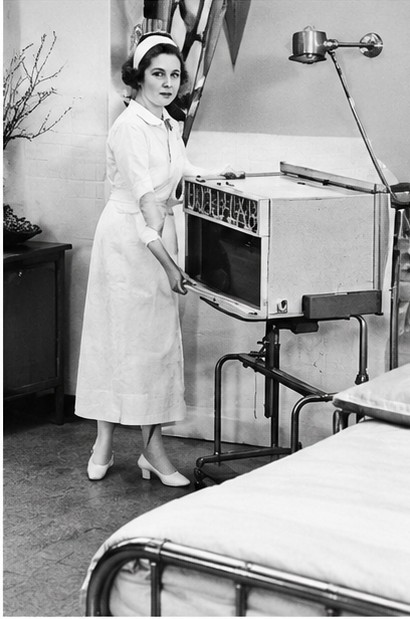
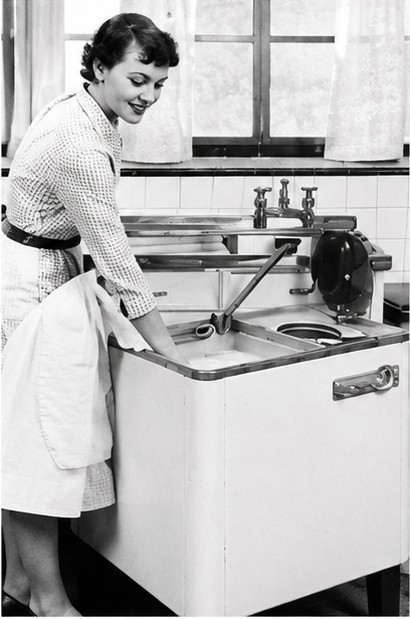
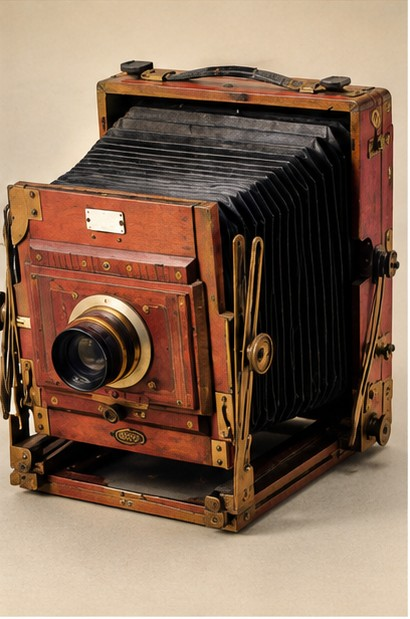

Wordlist — Inventions and Innovation
These words come up throughout today's tasks on inventions and their history.
| word / phrase | meaning | example |
|---|---|---|
| innovation | a new idea, method, or invention | The company is known for its constant innovation. |
| breakthrough | an important discovery or development | The vaccine was a major medical breakthrough. |
| revolutionize | to completely change the way something is done | Smartphones revolutionized the way we communicate. |
| pioneer | a person who is among the first to do something | She was a pioneer in early computer programming. |
| patent | an official right to be the only one allowed to make or sell an invention | He filed a patent for his new design. |
| prototype | the first version of something, built to test an idea | The first prototype barely worked, but it proved the idea. |
| obsolete | no longer used because something newer or better exists | Fax machines are now almost completely obsolete. |
| groundbreaking | new and original; introducing new ideas or methods | It was a groundbreaking discovery at the time. |
| accessible | able to be easily obtained, reached, or used | The technology only became accessible to ordinary people later. |
| transform | to change something completely, especially for the better | The internet has transformed how we work and study. |
Match each word to its definition.
Read this short text. All ten words from the table are highlighted.
Every major innovation starts somewhere small. A pioneer in the field builds a rough prototype, often with no idea it will lead to a real breakthrough. Some inventions quietly become obsolete within a few years; others are so groundbreaking that they transform the way people live. It can take decades before a new technology becomes truly accessible to ordinary people rather than a small group of specialists — and by then, the original inventor may not even hold the patent anymore.
True or false?
1. A prototype is usually the final, perfect version of an invention.
2. A patent gives someone the exclusive right to make or sell their invention.
3. Something obsolete is brand new and cutting-edge.
4. A pioneer is someone who is among the first to try something.
5. If something is accessible, it is easy to obtain or use.
Article — The Internet: A Revolution in Connection
Read the article below, then answer the questions that follow.
Few innovations have transformed daily life as completely as the internet. Fifty years ago, the idea of instantly sending a message to someone on the other side of the world would have sounded like science fiction. Today, it is something billions of people do without a second thought.
The internet's origins go back to the late 1960s, when computer scientists in the United States built a network called ARPANET, designed to let a small number of computers communicate with each other. Nobody involved in that early prototype could have imagined it would eventually connect nearly every country on Earth. For years, the technology remained mostly hidden inside universities and government offices, far from accessible to the public.
The real breakthrough came in the 1990s, with the invention of the World Wide Web. Suddenly, ordinary people could use the internet without needing to understand computer programming. This groundbreaking development is what most people actually picture when they think of "the internet" today: web pages, links, and search engines. Businesses raced to get online, and within a decade, the internet had gone from a niche tool used by specialists to something that was starting to revolutionize how people shopped, worked, and communicated.
Since then, the pace of change has only accelerated. Smartphones made the internet accessible from almost anywhere, not just from a desk. Social media transformed how people share news and stay in touch with friends and family. Even industries that once seemed completely unrelated to computers, such as farming and medicine, now depend heavily on internet-connected technology.
Of course, this rapid transformation hasn't been entirely positive. Concerns about privacy, misinformation, and screen time are now as much a part of the conversation as the benefits. But whatever one's opinion of these changes, it's hard to deny that the internet counts among the most significant inventions in human history, on the same level as the printing press or the telephone.
Are the following statements TRUE or FALSE, according to the article?
1. The internet's origins go back to the late 1960s.
2. Ordinary people could easily use the internet as soon as ARPANET was built.
3. The World Wide Web made the internet much easier for ordinary people to use.
4. According to the article, every industry has always depended on internet-connected technology.
5. The article suggests the internet is one of the most significant inventions in history.
Write a formal summary of the article (about 80 words).
Now record yourself speaking about it.
Do you think the internet has done more good than harm? Speak naturally for at least 30 seconds.
⏱ This recording must be at least 30 seconds long, or the platform won't let you move on — you'll be able to record it again if it comes out too short.
It Was All New Once
Do you know what each of these inventions is called? Write your best guess under each photo.






1. Mobile phone (an early "brick" cell phone)
2. Syringe
3. Airplane (the Wright Brothers' original biplane)
4. X-ray machine
5. Washing machine
6. Camera
Now that you know what each invention is, write at least 30 words about each one.
What is it used for? How do you think it changed people's lives?
1. Mobile phone
2. Syringe
3. Airplane
4. X-ray machine
5. Washing machine
6. Camera
Vocabulary Matching
Match each word to its definition.
Reading — Air Conditioning
Discuss these questions before you read.
1. How important is air conditioning in your country?
2. Why is it important to have comfortable places to work and study?
Read the passage below quickly. Who is/was:
1. Willis Carrier?
2. Jed Brown?
Air conditioning
The history of an invention that makes life more pleasant
Willis Carrier designed the first air-conditioning unit in 1902, just a year after graduating from Cornell University with a Masters in Engineering. At a Brooklyn printing plant, fluctuations in heat and moisture were causing the size of the printing paper to keep changing slightly, making it hard to align different colours. Carrier's invention made it possible to control temperature and humidity levels and so align the colours. The invention also allowed industries such as film, processed food, textiles and pharmaceuticals to improve the quality of their products.
In 1914, the first air-conditioning device was installed in a private house. However, its size, similar to that of an early computer, meant it took up too much space to come into widespread use, and later models, such as the Weathermaker, which Carrier brought out in the 1920s, cost too much for most people. Cooling for human comfort, rather than industrial need, really took off when three air conditioners were installed in the J.L. Hudson Department Store in Detroit, Michigan. People crowded into the shop to experience the new invention. The fashion spread from department stores to cinemas, whose income rose steeply as a result of the comfort they provided.
To start with, money-conscious employers regarded air conditioning as a luxury. They considered that if they were paying people to work, they should not be paying for them to be comfortable as well. So in the 1940s and '50s, the industry started putting out a different message about its product: according to their research, installing air conditioning increased productivity by 24% when typists transferred from a regular office to a cooled one. Another study into office working conditions, which was carried out in the late '50s, showed that the majority of companies cited air conditioning as the single most important contributor to efficiency in offices.
However, air conditioning has its critics. Jed Brown, an environmentalist, complains that air conditioning is a factor in global warming. Unfortunately, he adds, because air conditioning leads to higher temperatures, people have to use it even more. However, he admits that it provides a healthier environment for many people in the heat of summer.
Read Questions 1–5 below and underline the key ideas. Don't read the options yet — then answer.
1. When Willis Carrier invented air conditioning, his aim was to:
2. Home air conditioners were not popular at first because they were:
3. Employers refused to put air conditioning in workplaces at first because they:
4. What was the purpose of the research done in the 1940s and '50s?
5. What does Jed Brown say about air conditioning?
Useful language from this passage
Just for reference — nothing to complete here.
- "just a year after graduating from..."
- "fluctuations in heat and moisture"
- "made it possible to control..."
- "regarded ... as a luxury"
- "putting out a different message about"
- "increased productivity by 24%"
- "the single most important contributor to"
- "has its critics"
- "a factor in global warming"
- "provides a healthier environment for"
Grammar note — passive voice: notice how often this passage describes processes and findings using the passive ("were installed", "was carried out", "is regarded") rather than saying exactly who did the action. This is very common in factual, historical writing where the process matters more than who specifically performed it.
One More Reading — The Refrigerator
Read the passage, then answer the questions below.
The refrigerator: keeping food fresh
Before mechanical refrigeration existed, most households relied on blocks of ice, delivered regularly and stored in an insulated wooden box, to keep food from spoiling. The first practical home refrigerators using mechanical cooling did not appear until the 1910s, and even then, they were large, expensive, and unreliable enough that many families continued to trust the old icebox instead.
Early refrigerators were also seen as something of a luxury rather than a necessity. Manufacturers had to convince sceptical households that spending money on a machine to do a job ice already did, reasonably well, was worthwhile. It took aggressive advertising, focused on convenience and the promise of never needing an ice delivery again, to shift public opinion over the following two decades.
By the 1930s and '40s, falling prices and improvements in reliability meant refrigerators had become standard in many homes across North America and Europe. This had consequences that went well beyond the kitchen: with food staying fresh for longer, households could shop less frequently and in larger quantities, which in turn changed the way supermarkets themselves were designed and stocked.
Today, critics point out a different concern. Refrigerants, the chemicals used inside cooling systems, have historically included substances that are extremely harmful to the ozone layer or that contribute significantly to global warming. Manufacturers have gradually shifted to less damaging alternatives, but environmental scientists argue the industry has been far too slow to fully address the problem.
1. Before mechanical refrigeration, most households:
2. Early mechanical refrigerators were not popular at first mainly because they were:
3. What convinced more households to buy a refrigerator?
4. According to the passage, widespread refrigerator use changed:
5. What do environmental scientists say about refrigerant chemicals?